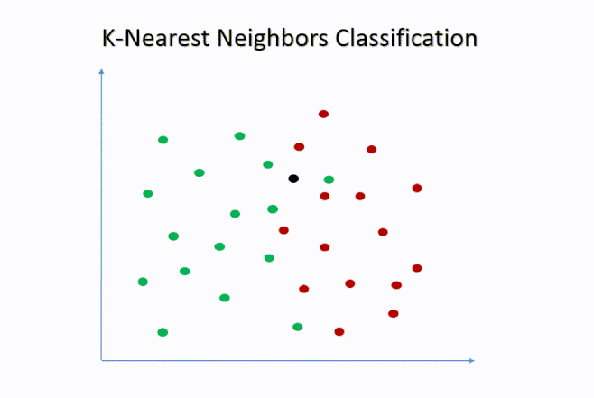

Unidad 9 — Clasificación
Semana 14: Modelo kNN (k-Near Neighbors)
 https://eduard-martinez.github.io
https://eduard-martinez.github.io
1 Recordemos la clase anterior
En la sesión pasada introdujimos los modelos de clasificación paramétricos, usando como ejemplo la Regresión Logística (Logit). Allí aprendimos que:
- El objetivo era predecir una variable categórica, como acepta/no acepta o mora/no mora.
- La regresión logística estimaba una probabilidad \(P(Y = 1 | X)\) a partir de una relación funcional específica entre las variables.
- La interpretación se centraba en los coeficientes y los odds ratios, útiles para explicar el efecto de cada variable.
Sin embargo, este enfoque tiene limitaciones: - Supone una forma funcional fija (sigmoide).
- Puede perder precisión si la relación entre variables es no lineal o compleja.
Motivación de la clase de hoy: Modelos como la regresión logística suponen una relación funcional específica entre las variables \(X\) y la probabilidad de pertenecer a una clase \(P(Y=1)\). Sin embargo, en muchos casos esta relación puede ser no lineal o desconocida, y el modelo puede perder capacidad predictiva.
1.1 El modelo k-Nearest Neighbors (kNN)
El algoritmo kNN clasifica una observación según las clases de sus vecinos más cercanos en el espacio de características.
- Calcula la distancia entre la observación nueva y todas las observaciones del conjunto de entrenamiento.
- Selecciona los k vecinos más cercanos (por ejemplo, los 5 más próximos).
- Asigna la observación a la clase mayoritaria entre esos vecinos.
 Intuición práctica: La idea central es que observaciones similares tienden a tener comportamientos similares. Si la mayoría de los estudiantes con características parecidas a un nuevo estudiante se retiraron del curso, el modelo predecirá que probablemente ese estudiante también se retire. Por ejemplo, si un estudiante asiste poco, estudia pocas horas y entrega pocos trabajos, y entre sus 7 vecinos más parecidos el 80% se retiró, el modelo clasificará al nuevo estudiante como retirado.
1.1.1 Elección del parámetro k
El valor de k determina cuántos vecinos se toman en cuenta para clasificar una nueva observación. Este parámetro controla el equilibrio entre precisión local y estabilidad general del modelo.
| Valor de k | Características | Riesgo |
|---|---|---|
| Pequeño (k = 1–3) | Modelo muy sensible al ruido (alta varianza). | Sobreajuste (overfitting). |
| Grande (k = 20–50) | Promedia muchos vecinos, suaviza la frontera. | Subajuste (underfitting). |
En la práctica, si \(k\) es muy pequeño, el modelo puede reaccionar exageradamente a casos atípicos. Si \(k\) es demasiado grande, la predicción se vuelve genérica, mezclando grupos distintos. En un contexto de Business Analytics, elegir un k adecuado equivale a decidir cuánto contexto se usa para tomar decisiones:
- Un k pequeño = decisiones altamente personalizadas (pero más arriesgadas).
- Un k grande = decisiones más estables, pero menos sensibles a diferencias individuales.
¿Cómo elegir el mejor k?: En la práctica, se prueban varios valores de k y para cada valor, se calcula el error de clasificación (porcentaje de predicciones incorrectas). Finalmente se elige el k que minimiza el error en los datos de validación.
1.1.2 Medidas de distancia
El algoritmo depende de cómo se define la “cercanía” entre observaciones. Las distancias más comunes son:
| Distancia | Fórmula | Uso típico |
|---|---|---|
| Euclidiana | ( d(x,y)= ) | Variables numéricas continuas |
| Manhattan | ( d(x,y)=_i | x_i-y_i |
| Minkowski / Coseno | Generalizaciones útiles en texto o redes | Casos avanzados |
Es fundamental escalar las variables antes de aplicar kNN para evitar que las variables con valores grandes dominen la distancia.
1.2 Evaluación del modelo
Las métricas de evaluación son las mismas utilizadas en otros modelos de clasificación, como la regresión logística. Sin embargo, en el caso del kNN, estas métricas permiten analizar qué tan bien el modelo está reconociendo patrones en función de la similitud entre observaciones.
| Métrica | Descripción | Interpretación práctica |
|---|---|---|
| Exactitud (Accuracy) | Proporción de clasificaciones correctas sobre el total. | Evalúa el desempeño global del modelo. Útil cuando las clases están balanceadas. |
| Sensibilidad (Recall) | Capacidad del modelo para identificar correctamente los casos positivos. | Mide cuántos clientes en riesgo (mora = sí) fueron detectados correctamente. |
| Especificidad | Capacidad del modelo para identificar correctamente los casos negativos. | Evalúa qué tan bien clasifica los clientes “buenos pagadores”. |
| Precisión (Precision) | Proporción de verdaderos positivos entre los predichos como positivos. | Indica qué tan confiables son las alertas del modelo (por ejemplo, clientes en mora realmente en mora). |
| F1-Score | Media armónica entre precisión y sensibilidad. | Equilibrio entre detectar y no generar falsas alarmas. |
| AUC-ROC | Área bajo la curva ROC; mide el poder discriminatorio del modelo. | Cuanto más se acerque a 1, mejor separa las clases. |
Matriz de confusión: Resume los aciertos y errores del modelo de clasificación. Permite calcular todas las métricas anteriores y visualizar cómo se distribuyen las predicciones.
| Predicho: Sí | Predicho: No | |
|---|---|---|
| Real: Sí | Verdadero Positivo (TP) | Falso Negativo (FN) |
| Real: No | Falso Positivo (FP) | Verdadero Negativo (TN) |
2 Aplicación en R
Para ilustrar el uso de los modelos de clasificación no paramétricos, trabajaremos con una base sintética que representa a estudiantes inscritos en un curso universitario. Cada registro contiene información sobre el comportamiento académico y el desempeño del estudiante a lo largo del semestre, lo que nos permitirá predecir si un estudiante aprobará o no el curso utilizando el modelo k-Nearest Neighbors (kNN).
En este contexto:
- Cada observación corresponde a un estudiante.
- La variable dependiente es categórica (
aprueba: Sí / No).
- Las variables explicativas describen aspectos como las horas de estudio, asistencia, participación, uso de R, trabajos entregados y afinidad con la estadística.
El objetivo de este ejercicio es aplicar el algoritmo kNN para responder preguntas como:
- ¿Podemos predecir si un estudiante aprobará el curso a partir de su perfil académico?
- ¿Qué tan precisa es la clasificación según el número de vecinos (k) considerados?
- ¿Cómo cambia la calidad de las predicciones al variar k o al escalar las variables?
💡 Cómo usar este material:
Puedes ejecutar los chunks de R directamente en el navegador gracias a webR, sin necesidad de instalar nada localmente.
2.1 Preparación del entorno
El propósito de este bloque es asegurar un entorno limpio, reproducible y funcional antes de iniciar el análisis.
Primero, eliminamos cualquier objeto previo que pueda interferir con la sesión actual. Luego, instalamos (si es necesario) y cargamos los paquetes requeridos para la manipulación de datos, la implementación del algoritmo k-Nearest Neighbors (kNN), la evaluación del modelo y la visualización de resultados. Con esto, dejamos el entorno preparado para comenzar el análisis aplicado de clasificación no paramétrica.
tidyverse: facilita la transformación, manipulación y visualización de datos. class: contiene la función knn() que implementa el algoritmo k-Nearest Neighbors. caret: permite calcular métricas de desempeño, generar matrices de confusión y realizar validaciones cruzadas. pROC: se emplea para evaluar el poder discriminatorio del modelo mediante la curva ROC y el área bajo la curva (AUC).
2.2 Ingesta de datos
En esta sección realizamos la ingesta de datos, es decir, el proceso de generar o cargar la base que utilizaremos para estimar el modelo KNN. Cada registro representa a un estudiante, con variables relacionadas con su esfuerzo, participación y rendimiento a lo largo del semestre.
La estructura de los datos es la siguiente:
• horas_estudio: promedio semanal de horas dedicadas al curso.
• asistencia: porcentaje de asistencia a clase.
• participacion: nivel de participación en clase (0–100).
• uso_de_R: nivel de dominio de R (1–5).
• trabajos_entregados: cantidad de trabajos entregados (0–5).
• afinidad_estadistica: gusto por la estadística (0–100).
• aprueba: resultado final (1 = aprueba, 0 = reprueba).
• retira: indica si el estudiante se retiró del curso antes de finalizar (1 = sí, 0 = no).Nuestro objetivo será estimar cómo cada una de estas variables influye en la probabilidad de aprobar el curso.
2.3 Preparación de los Datos
Antes de aplicar el modelo k-Nearest Neighbors (kNN), es fundamental preparar adecuadamente los datos.
2.3.1 Escalar Variables
A diferencia de la regresión logística, donde las variables se utilizan directamente dentro de una función matemática, el kNN se basa en distancias entre observaciones. Por esta razón, las variables deben estar en una misma escala para que ninguna domine el cálculo de distancia. Por ejemplo, si una variable se mide en porcentajes (0–100) y otra en horas (0–10), la de mayor rango influirá desproporcionadamente en la predicción. Para evitarlo, aplicamos un proceso de escalamiento y centrado, que transforma todas las variables numéricas de manera que tengan media 0 y desviación estándar 1. A continuación seleccionamos las variables numéricas relevantes. Posteriormente aplicamos el escalamiento con scale() y finalmente volvemos a unir la variable objetivo (aprueba) para mantener la estructura original de la base.
Importancia del escalamiento: El kNN calcula distancias entre observaciones (por defecto, euclidianas). Si las variables no se escalan, las que tienen rangos mayores (por ejemplo, asistencia = 0–100) dominarán el cálculo, distorsionando la noción de “vecindad”. El escalamiento garantiza que todas las variables contribuyan de manera equilibrada al proceso de clasificación.
2.3.2 División en entrenamiento y prueba
Antes de entrenar el modelo, dividimos la base de datos en dos subconjuntos: uno para entrenamiento y otro para prueba. Esta separación es fundamental en el aprendizaje supervisado, ya que permite evaluar la capacidad de generalización del modelo —es decir, qué tan bien predice sobre casos nuevos que no ha “visto” durante el entrenamiento.
- El conjunto de entrenamiento se usa para ajustar el modelo (70% de las observaciones).
- El conjunto de prueba se utiliza para evaluar su desempeño (30% restante).
Esta práctica evita el sobreajuste (overfitting), que ocurre cuando el modelo aprende demasiado bien los datos de entrenamiento, pero falla al aplicarse a nuevas observaciones.
2.4 Entrenamiento del Modelo kNN
En este paso aplicamos el algoritmo k-Nearest Neighbors (kNN) utilizando los conjuntos de entrenamiento (train_x, train_y) y de prueba (test_x). El modelo se entrena con los datos conocidos (estudiantes cuyo resultado ya sabemos) y luego clasifica los nuevos casos según sus vecinos más cercanos.
El parámetro k = 5 indica que para cada observación en el conjunto de prueba, el algoritmo buscará los 5 estudiantes más similares (en términos de distancia) dentro del conjunto de entrenamiento. Luego asignará la clase mayoritaria (Sí o No) entre esos vecinos.
2.5 Matriz de confusión
La matriz de confusión compara las predicciones del modelo con los valores reales y permite visualizar los aciertos y errores de clasificación.
Interpretación de los resultados:
• Verdaderos positivos (VP): el modelo predice aprobar y el estudiante aprueba.
• Verdaderos negativos (VN): el modelo predice reprobar y el estudiante reprueba.
• Falsos positivos (FP): el modelo predice aprobar pero el estudiante reprueba.
• Falsos negativos (FN): el modelo predice reprobar pero el estudiante aprueba.2.6 Curva ROC y AUC
La curva ROC muestra la relación entre la tasa de verdaderos positivos (sensibilidad) y la tasa de falsos positivos (1 - especificidad) para distintos umbrales de decisión.
El Área Bajo la Curva (AUC) mide el desempeño general del modelo:
• AUC = 0.5 → el modelo no discrimina (como lanzar una moneda).
• AUC = 1 → el modelo clasifica perfectamente.Un valor de AUC entre 0.7 y 0.9 indica un buen poder discriminatorio, mientras que valores superiores a 0.9 suelen considerarse excelentes. Si el AUC está cerca de 0.5, el modelo no está capturando patrones útiles.
2.7 Evaluación con distintos valores de k
El parámetro k es el elemento central del algoritmo k-Nearest Neighbors, ya que determina cuántos vecinos se consideran al clasificar una nueva observación. Valores de k pequeños hacen que el modelo sea más sensible al ruido (puede sobreajustarse), mientras que valores grandes lo vuelven más general (puede subajustarse).
En esta sección exploramos cómo cambia la precisión del modelo (accuracy) al variar el número de vecinos considerados.
Para ello, probamos distintos valores impares de k —entre 1 y 21— y calculamos el porcentaje de clasificaciones correctas para cada uno.
El siguiente gráfico muestra cómo varía la exactitud del modelo conforme aumenta el número de vecinos k. Este tipo de análisis es útil para identificar el valor de k que ofrece un equilibrio entre precisión y estabilidad.
3 Actividad en Clase
3.1 Instrucciones:
- Ejecute los chunks de código proporcionados en R (puede hacerlo directamente en el navegador o en RStudio).
- Observe los resultados obtenidos en cada sección.
- Genere un documento en Word (.docx) donde:
- Copie las preguntas que aparecen al final.
- Redacte sus interpretaciones y conclusiones con base en los resultados.
- No copie el código, solo redacte sus respuestas.
- Copie las preguntas que aparecen al final.
- Suba su documento y su script en R a la plataforma Intu, en la actividad correspondiente a la Semana 14 — Modelo kNN (Predicción de Retiro).
3.2 Estimación del modelo kNN
Ejecute el siguiente código para estimar un modelo k-Nearest Neighbors (kNN) que prediga la probabilidad de que un estudiante se retire del curso, usando las variables explicativas relacionadas con esfuerzo y participación. ⚠️ No incluya la variable aprueba en el modelo.
3.3 Preguntas para el informe
1. Comparación entre modelos:
• ¿Cómo cambia la matriz de confusión al pasar de k = 5 a k = 10 y k = 20?
2. Evaluación de desempeño:
• Calcule la exactitud (accuracy) para cada modelo (k = 5, k = 10, k = 20).
• ¿Cuál de los tres modelos presenta la mayor exactitud?
3. Curva ROC y poder discriminatorio
• ¿Qué valor de AUC obtuvo para k = 5?
• ¿Qué indica este valor sobre la capacidad del modelo para distinguir entre estudiantes que se retiran y los que no?
• ¿Esperarías que el AUC mejore, empeore o se mantenga al aumentar k? ¿Por qué?
4. Reflexión final: Si tuvieras que elegir uno de los tres modelos, ¿cuál seleccionarías y por qué?
💡 Entrega: Suba su documento con las respuestas a la plataforma Intu, en la actividad correspondiente a la Semana 14 — Modelo kNN (Predicción de Retiro). Y suba el script con el que realizó el procedimiento. Recuerde que se evaluará la claridad de sus interpretaciones, la consistencia con los resultados del modelo y su capacidad para proponer acciones basadas en los hallazgos.